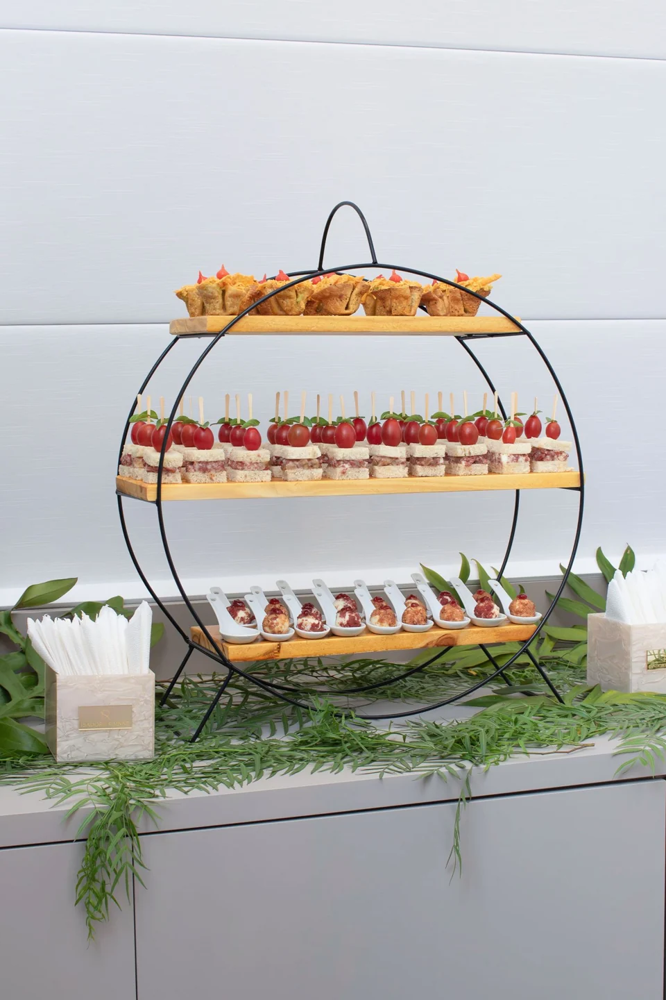
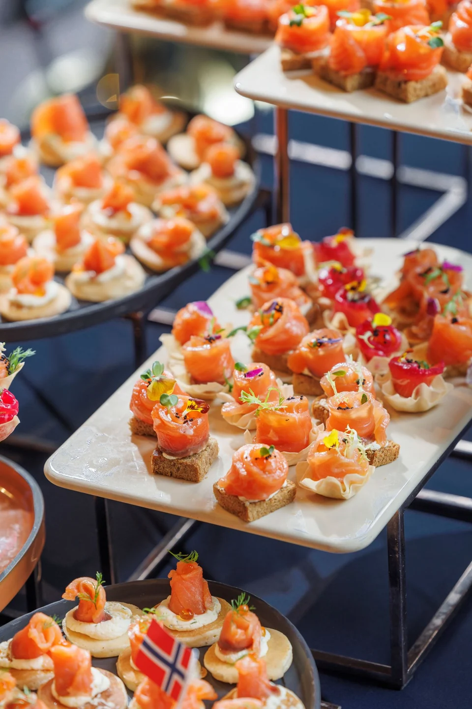
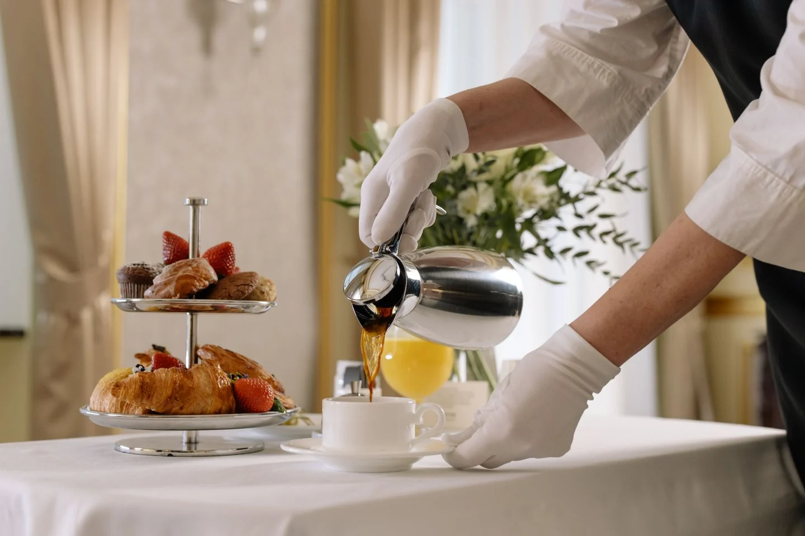
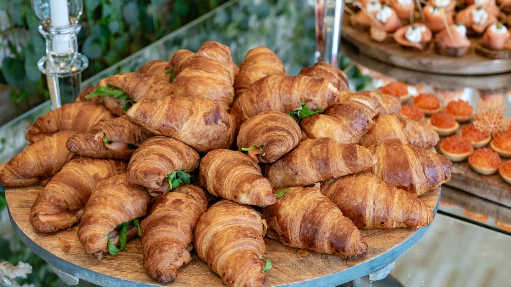
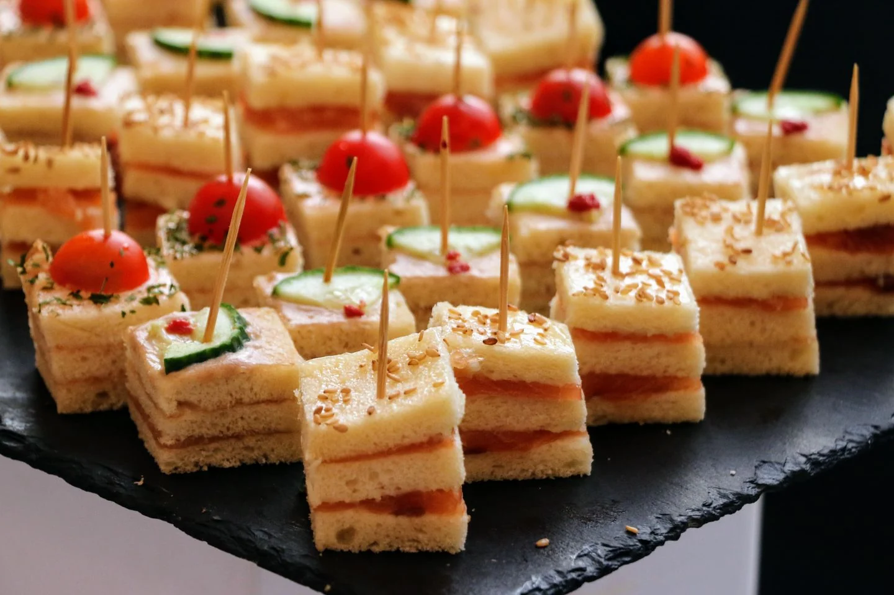
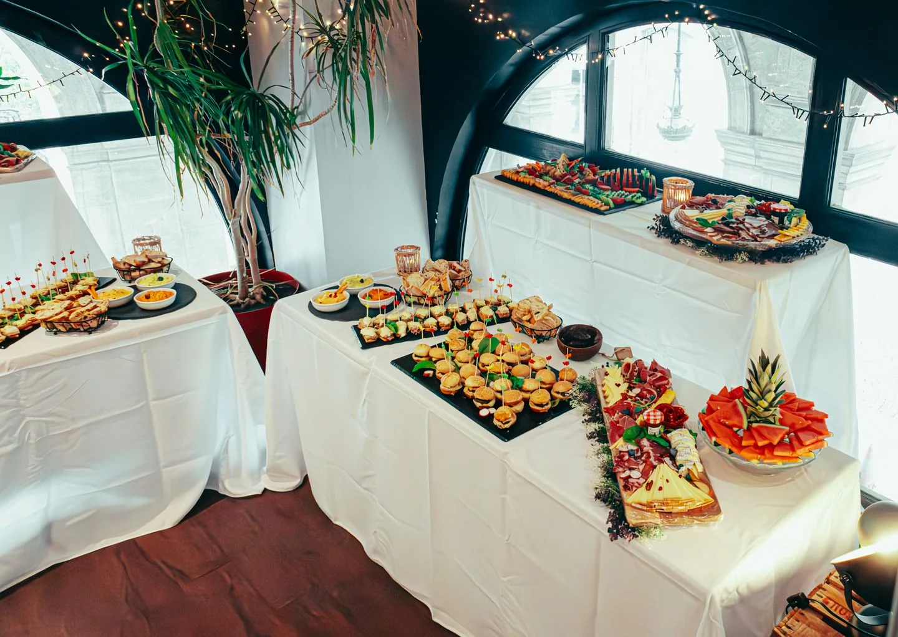

OPTION M3 · PEXELS #34890754
Tiered appetizer station
My first choice for an upscale station: coordinated small bites displayed on clean, sculptural risers.
Photo: Laura Beauty Designer | Brasil
View original & download →Six new online photo options with premium, editorial-style presentation. These are original stock settings, not Southern Crescent events. Some show reception or hospitality stations rather than an office; the captions explain the fit.
My strongest picks: M3 for a complete upscale display, or M4 for an editorial food close-up. C1 has been applied to the charcuterie imagery. The meeting-catering photo remains unchanged while you choose.
← View the updated website · Previous M1, M2 & selected C1
My first choice for an upscale station: coordinated small bites displayed on clean, sculptural risers.
Photo: Laura Beauty Designer | Brasil
View original & download →
My first choice for a tight editorial food crop: individual bites, delicate garnish, and a carefully repeated presentation.
Photo: Nguyen Ngoc Tien
View original & download →
A more formal hospitality moment with pastries and coffee service. The original setting is not a boardroom.
Photo: cottonbro studio
View original & download →
A food-led breakfast option: croissants fill the frame with serving pieces and other bites behind them.
Photo: Ramaz Bluashvili
View original & download →
A neatly arranged savory spread that reads as practical catering, with tomatoes and cucumber adding color.
Photo: Haim Charbit
View original & download →
A wider view with coordinated platters and varied food. Best if you want to show the scale of the setup, rather than one dish.
Photo: Newman Photographs
View original & download →